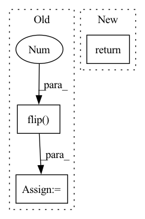

Pattern ID :35792
Before Change
// Prepare kernel
self.kernel: torch.Tensor = self.kernel.to(device).to(dtype).detach()
self.kernel: torch.Tensor = self.kernel.unsqueeze(1).unsqueeze(1)
self.kernel: torch.Tensor = self.kernel.flip(-3 )
return
def __repr__(self) -> str:
return self.__class__.__name__ + "("\After Change
// self.kernel: torch.Tensor = self.kernel.to(device).to(dtype).detach()
// self.kernel: torch.Tensor = self.kernel.unsqueeze(1).unsqueeze(1)
// self.kernel: torch.Tensor = self.kernel.flip(-3)
return
def prepare_kernel(self, device, dtype):
kernel = self.kernel.to(device).to(dtype).detach()
kernel = kernel.unsqueeze(1).unsqueeze(1)In pattern: SUPERPATTERN
Frequency: 3
Non-data size: 3
Instances Fragment ID: 101811369
Project Name: dsgoficial/pytorch_segmentation_models_trainer
Commit Name: 63bc9f7b7f1ca74f1c2ccb9d02fd4e6f01123a8f
Time: 2021-06-21
Author: philipeborba@gmail.com
File Name: pytorch_segmentation_models_trainer/utils/tensor_utils.py
M Class Name: SpatialGradient
N Class Name: SpatialGradient
M Method Name: __init__(7)
N Method Name: __init__(7)
M Parent Class: torch.nn.Module
N Parent Class: torch.nn.Module
M File Name: pytorch_segmentation_models_trainer/utils/tensor_utils.py
N File Name: pytorch_segmentation_models_trainer/utils/tensor_utils.py
M Start Line: 198
M End Line: 210
N Start Line: 198
N End Line: 211
Before Change
for idx in range(os.shape[1]):
// NOTE: scipy.signal.lfilter accespts b, a in order,
// but torchaudio expect the oppsite; a, b in order
ai = a[idx].view(-1).flip(0 )
bi = torch.zeros_like(ai)
bi[0] = 1
out_stream_syn[:, idx, :] = lfilter(os[:, idx, :], ai, bi, clamp=False)
out_syn += [out_stream_syn]After Change
def inference(self, x, lengths=None):
out = self.model(x.transpose(1, 2)).transpose(1, 2)
return _shallow_ar_inference(out, self.stream_sizes, self.analysis_filts)
class FeedForwardNet(BaseModel): Fragment ID: 101811371
Project Name: r9y9/nnsvs
Commit Name: 72d7fe505198e52960ab55d05f1179fe8d55e3a8
Time: 2020-11-02
Author: zryuichi@gmail.com
File Name: nnsvs/model.py
M Class Name: Conv1dResnetSAR
N Class Name: Conv1dResnetSAR
M Method Name: inference(3)
N Method Name: inference(3)
M Parent Class: Conv1dResnet
N Parent Class: Conv1dResnet
M File Name: nnsvs/model.py
N File Name: nnsvs/model.py
M Start Line: 81
M End Line: 102
N Start Line: 106
N End Line: 107
Before Change
if self.bidirectional:
h_f, h_b = h.chunk(2, dim=1)
h_b = h_b.flip(0 )
h = torch.cat([h_f, h_b], dim=2)
return h
After Change
x = ligru_lay(x)
x = x.transpose(0,1)
return x, 0
class liGRU_layer(torch.jit.ScriptModule): Fragment ID: 101811375
Project Name: speechbrain/speechbrain
Commit Name: c4bf280dd72034847589ca5466253e879386e735
Time: 2020-05-01
Author: mirco.ravabelli@gmail.com
File Name: speechbrain/nnet/architectures.py
M Class Name: liGRU
N Class Name: liGRU
M Method Name: forward(2)
N Method Name: forward(2)
M Parent Class: torch.jit.ScriptModule
N Parent Class: torch.jit.ScriptModule
M File Name: speechbrain/nnet/architectures.py
N File Name: speechbrain/nnet/architectures.py
M Start Line: 1326
M End Line: 1346
N Start Line: 1286
N End Line: 1291